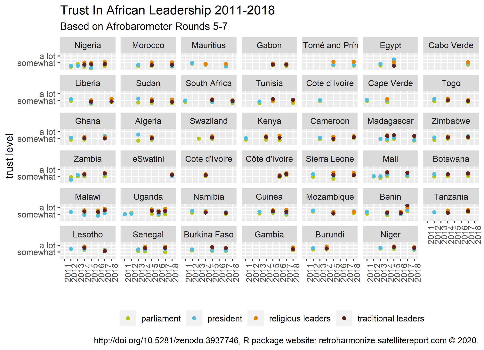

Case Study: Working With Afrobarometer surveys
Source:vignettes/afrobarometer.Rmd
afrobarometer.RmdThe goal of this case study is to explore the variation in trust in various state institutions among African societies, as well as changes in trust over time.
To do this, we use data from Afrobarometer, a cross-national survey project measuring attitudes and opinions about democracy, the economy and society in African countries based on general population samples. Currently, seven rounds of the Afrobarometer are available, covering the period between 1999 and 2019.
retroharmonize is not affiliated with Afrobarometer. To fully reproduce this example, you must acquire the data files from them, which is free of charge. Afrobarometer data is protected by copyright. Authors of any published work based on Afrobarometer data or papers are required to acknowledge the source, including, where applicable, citations to data sets posted on this website. Please acknowledge the copyright holders in all publications resulting from its use by means of bibliographic citation in this form:
In this vignette, we harmonize data from rounds Afrobarometer Data Round 5 (all countries), Afrobarometer Data Round 6 (all countries) and Afrobarometer Data Round 7 (all countries). Some elements of the vignette are not “live”, because we want to avoid re-publishing the original microdata files from Afrobarometer, but you can access the data directly from the www.afrobarometer.org website.
File names (to identify file versions):
Round 5: merged-round-5-data-34-countries-2011-2013-last-update-july-2015.sav
Round 6: merged_r6_data_2016_36countries2.sav
Round 7: r7_merged_data_34ctry.release.sav
For reproducibility, we are storing only a small subsample from the files and the metadata. We assume that you extracted and copied all .sav files into a single folder that we will call in this vignette the afrobarometer_dir. Define your afrobarometer_dir with file.path() in your own system.
Importing Afrobarometer Files
We start by reading in the three rounds of the Afrobarometer.
### use here your own directory
ab <- dir ( afrobarometer_dir, pattern = "sav$" )
afrobarometer_rounds <- file.path(afrobarometer_dir, ab)
ab_waves <- read_surveys(afrobarometer_rounds, .f='read_spss')Let’s give a bit more meaningful identifiers than the file names:
attr(ab_waves[[1]], "id") <- "Afrobarometer_R5"
attr(ab_waves[[2]], "id") <- "Afrobarometer_R6"
attr(ab_waves[[3]], "id") <- "Afrobarometer_R7"We can review if the main descriptive metadata is correctly present with document_surveys().
documented_ab_waves <- document_surveys(ab_waves)
print(documented_ab_waves)
#> # A tibble: 3 × 5
#> id filename ncol nrow object_size
#> <chr> <chr> <int> <int> <dbl>
#> 1 Afrobarometer_R5 merged-round-5-data-34-countries-201… 349 51587 159027592
#> 2 Afrobarometer_R6 merged_r6_data_2016_36countries2.sav 365 53935 172064576
#> 3 Afrobarometer_R7 r7_merged_data_34ctry.release.sav 367 45823 148759488Create a metadata table, or a data map, that contains information about the variable names and labels, and where each row correspnds to one variable in the survey data file. We do this with the function metadata_survey_create(), which extracts the metadata from the survery data files, normalizes variable labels, identifies ranges of substantive responses and missing value codes. Its wrapper, metadata_create(), loops the function on a list of surveys, or on a set of files containing surveys.
ab_metadata <- metadata_create ( survey_list = ab_waves )Working with metadata
From the metadata file we select only those rows that correspond to the variables that we’re interested in: the rowid being the unique case identifier, DATEINTR with the interview date, COUNTRY containing information about the country where the interview was conducted, REGION with the region (sub-national unit) where the interview was conducted, and withinwt being the weighting factor.
Further, we select all variables that have the word “trust” in the normalized variable label.
For these variables, we create normalized variable names (var_name) and labels (var_label).
library(dplyr)
to_harmonize <- ab_metadata %>%
filter ( var_name_orig %in%
c("rowid", "DATEINTR", "COUNTRY", "REGION", "withinwt") |
grepl("trust ", label_orig ) ) %>%
mutate ( var_label = var_label_normalize(label_orig)) %>%
mutate ( var_label = case_when (
grepl("^unique identifier", var_label) ~ "unique_id",
TRUE ~ var_label)) %>%
mutate ( var_name = val_label_normalize(var_label))To further reduce the size of the analysis, we only choose a few variables based on the normalized variable names (var_name).
to_harmonize <- to_harmonize %>%
filter (
grepl ( "president|parliament|religious|traditional|unique_id|weight|country|date_of_int", var_name)
)The resulting table with information about the variables selected for harmonization looks as follows:
head(to_harmonize %>%
select ( all_of(c("id", "var_name", "var_label"))), 10)
#> id var_name
#> 1 Afrobarometer_R5 unique_id
#> 2 Afrobarometer_R5 country
#> 3 Afrobarometer_R5 date_of_interview
#> 4 Afrobarometer_R5 trust_key_leadership_figure_president_prime_minister
#> 5 Afrobarometer_R5 trust_parliament_national_assembly
#> 6 Afrobarometer_R5 within_country_weighting_factor
#> 7 Afrobarometer_R6 unique_id
#> 8 Afrobarometer_R6 country
#> 9 Afrobarometer_R6 date_of_interview
#> 10 Afrobarometer_R6 trust_president
#> var_label
#> 1 unique_id
#> 2 country
#> 3 date of interview
#> 4 trust key leadership figure president prime minister
#> 5 trust parliament national assembly
#> 6 within country weighting factor
#> 7 unique_id
#> 8 country
#> 9 date of interview
#> 10 trust presidentThe merge_surveys() function harmonizes the variable names, the variable labels and survey identifiers and returns a list of surveys (of class survey().) The parameter var_harmonization must be a list or a data frame that contains at least the original file name (filename), original variable names (var_name_orig), the new variable names (var_name) and their labels (var_label), so that the program knows which variables to take from what files and how to call and label them after transformation.
merged_ab <- merge_surveys ( survey_list = ab_waves,
var_harmonization = to_harmonize )
# country will be a character variable, and doesn't need a label
merged_ab <- lapply ( merged_ab,
FUN = function(x) x %>%
mutate( country = as_character(country)))Review the most important metadata with document_surveys():
documenteded_merged_ab <- document_surveys(merged_ab)
print(documenteded_merged_ab)
#> # A tibble: 3 × 5
#> id filename ncol nrow object_size
#> <chr> <chr> <int> <int> <dbl>
#> 1 Afrobarometer_R5 merged-round-5-data-34-countries-201… 6 51587 11570496
#> 2 Afrobarometer_R6 merged_r6_data_2016_36countries2.sav 8 53935 8652392
#> 3 Afrobarometer_R7 r7_merged_data_34ctry.release.sav 8 45823 7353968Harmonization
In the Afrobarometer trust is measured with four-point ordinal rating scales. Such data are best analyzed with ordinal models, which do not assume that the points are equidistant. However, to get a quick idea of how the data look like, we will assign numbers 0-3, with 0 corresponding to the least trust, and 3 corresponding to the most trust, and for the time-being analyze the data as if they were metric.
To review the harmonization on a single survey use pull_survey(). Here we select Afrobarometer Round 6.
R6 <- pull_survey ( merged_ab, id = "Afrobarometer_R6" )
attributes(R6$trust_president[1:20])
#> $labels
#> Missing Not at all
#> -1 0
#> Just a little Somewhat
#> 1 2
#> A lot Don’t know/ Haven't heard enough
#> 3 9
#> Refused
#> 98
#>
#> $label
#> [1] "trust president"
#>
#> $Afrobarometer_R6_name
#> [1] "."
#>
#> $Afrobarometer_R6_values
#> -1 0 1 2 3 9 98
#> -1 0 1 2 3 9 98
#>
#> $Afrobarometer_R6_label
#> [1] "Q52a. Trust president"
#>
#> $Afrobarometer_R6_labels
#> Missing Not at all
#> -1 0
#> Just a little Somewhat
#> 1 2
#> A lot Don’t know/ Haven't heard enough
#> 3 9
#> Refused
#> 98
#>
#> $id
#> [1] "Afrobarometer_R6"
#>
#> $class
#> [1] "retroharmonize_labelled_spss_survey" "haven_labelled_spss"
#> [3] "haven_labelled"The document_survey_item() function shows the metadata of a single variable.
document_survey_item(R6$trust_president)
#> $code_table
#> # A tibble: 7 × 5
#> values Afrobarometer_R6_values labels Afrobarometer_R6_labe… missing
#> <dbl> <dbl> <chr> <chr> <lgl>
#> 1 -1 -1 Missing Missing FALSE
#> 2 0 0 Not at all Not at all FALSE
#> 3 1 1 Just a little Just a little FALSE
#> 4 2 2 Somewhat Somewhat FALSE
#> 5 3 3 A lot A lot FALSE
#> 6 9 9 Don’t know/ Hav… Don’t know/ Haven't h… FALSE
#> 7 98 98 Refused Refused FALSE
#>
#> $history_var_name
#> name Afrobarometer_R6_name
#> "R6$trust_president" "."
#>
#> $history_var_label
#> label Afrobarometer_R6_label
#> "trust president" "Q52a. Trust president"
#>
#> $history_na_range
#> character(0)
#>
#> $history_id
#> [1] "Afrobarometer_R6"Afrobarometer’s SPSS files do not mark the missing values, so we have to be careful. The set of labels that are identified as missing:
collect_na_labels( to_harmonize )
#> [1] "Not asked"The set of valid category labels and missing value labels are as follows:
collect_val_labels (to_harmonize %>%
filter ( grepl( "trust", var_name) ))
#> [1] "Missing" "Not at all"
#> [3] "Just a little" "Somewhat"
#> [5] "A lot" "Don't know/Haven't heard enough"
#> [7] "Refused" "Don’t know/ Haven't heard enough"
#> [9] "Don't know/ Haven't heard enough" "Not Asked in this Country"
#> [11] "Not Asked in Country" "Don’t know/Haven’t heard enough"
#> [13] "Not asked in the country"We create a harmonization function from the harmonize_values() prototype function. In fact, this is just a re-setting the default values of the original function. It makes future reference in pipelines easier, or it can be used for a question block only, in this case to variables with starts_with("trust").
harmonize_ab_trust <- function(x) {
label_list <- list(
from = c("^not", "^just", "^somewhat",
"^a", "^don", "^ref", "^miss", "^not", "^inap"),
to = c("not_at_all", "little", "somewhat",
"a_lot", "do_not_know", "declined", "inap", "inap",
"inap"),
numeric_values = c(0,1,2,3, 99997, 99998, 99999,99999, 99999)
)
harmonize_values(
x,
harmonize_labels = label_list,
na_values = c("do_not_know"=99997,
"declined"=99998,
"inap"=99999)
)
}We apply this function to the trust variables. The harmonize_surveys() function binds all variables that are present in all surveys.
harmonized_ab_waves <- harmonize_surveys (
survey_list = merged_ab,
.f = harmonize_ab_trust ) Let’s look at the attributes of harmonized_ab_waves.
h_ab_structure <- attributes(harmonized_ab_waves)
h_ab_structure$row.names <- NULL # We have over 100K row names
h_ab_structure
#> $names
#> [1] "date_of_interview"
#> [2] "unique_id"
#> [3] "country"
#> [4] "within_country_weighting_factor"
#> [5] "trust_key_leadership_figure_president_prime_minister"
#> [6] "trust_parliament_national_assembly"
#> [7] "trust_president"
#> [8] "trust_traditional_leaders"
#> [9] "trust_religious_leaders"
#>
#> $class
#> [1] "tbl_df" "tbl" "data.frame"
#>
#> $id
#> [1] "Waves: Afrobarometer_R5; Afrobarometer_R6; Afrobarometer_R7"
#>
#> $filename
#> [1] "Original files: merged-round-5-data-34-countries-2011-2013-last-update-july-2015.sav; merged_r6_data_2016_36countries2.sav; r7_merged_data_34ctry.release.sav"Let’s add the year of the interview:
harmonized_ab_waves <- harmonized_ab_waves %>%
mutate ( year = as.integer(substr(as.character(
date_of_interview),1,4)))To keep our example manageable, we subset the datasets to include only five countries.
Analyzing the harmonized data
The harmonized data can be exported and analyzed in another statistical program. The labelled survey data is stored in labelled_spss_survey() vectors, which is a complex class that retains metadata for reproducibility. Most statistical R packages do not know it. The data should be presented either as numeric data with as_numeric() or as categorical with as_factor(). (See more why you should not fall back on the more generic as.factor() or as.numeric() methods in The labelled_spss_survey class vignette.)
Please note that the numeric form of these trust variables is not directly comparable with the numeric averages of the Eurobarometer trust variables, because the middle of the range is at 1.5 and not 0.5.
harmonized_ab_waves %>%
mutate_at ( vars(starts_with("trust")),
~as_numeric(.)*within_country_weighting_factor) %>%
select ( -all_of("within_country_weighting_factor") ) %>%
group_by ( country, year ) %>%
summarize_if ( is.numeric, mean, na.rm=TRUE )
#> # A tibble: 17 × 7
#> # Groups: country [5]
#> country year trust_key_leadership_… trust_parliament_n… trust_president
#> <chr> <int> <dbl> <dbl> <dbl>
#> 1 Algeria 2013 2.59 1.70 NaN
#> 2 Algeria 2015 NaN 1.82 2.00
#> 3 Madagascar 2013 1.96 NaN NaN
#> 4 Madagascar 2014 NaN 1.75 1.95
#> 5 Madagascar 2015 NaN 1.94 2.15
#> 6 Madagascar 2018 NaN 1.71 1.83
#> 7 Niger 2013 2.59 2.52 NaN
#> 8 Niger 2015 NaN 2.43 2.64
#> 9 Niger 2018 NaN 2.31 2.42
#> 10 Nigeria 2012 1.59 1.43 NaN
#> 11 Nigeria 2013 1.59 1.84 NaN
#> 12 Nigeria 2014 NaN 1.45 1.64
#> 13 Nigeria 2015 NaN 1.15 1.30
#> 14 Nigeria 2017 NaN 1.57 2.06
#> 15 South Africa 2011 2.04 1.84 NaN
#> 16 South Africa 2015 NaN 1.82 1.87
#> 17 South Africa 2018 NaN 1.70 1.86
#> # … with 2 more variables: trust_traditional_leaders <dbl>,
#> # trust_religious_leaders <dbl>And the factor representation, without weighting:
library(tidyr) ## tidyr::pivot_longer()
harmonized_ab_waves %>%
select ( -all_of("within_country_weighting_factor") ) %>%
mutate_if ( is.labelled_spss_survey, as_factor) %>%
pivot_longer ( starts_with("trust"),
names_to = "institution",
values_to = "category") %>%
mutate ( institution = gsub("^trust_", "", institution) ) %>%
group_by ( country, year, institution, category ) %>%
summarize ( n = n() )
#> `summarise()` has grouped output by 'country', 'year', 'institution'. You can override using the `.groups` argument.
#> # A tibble: 311 × 5
#> # Groups: country, year, institution [85]
#> country year institution category n
#> <chr> <int> <chr> <fct> <int>
#> 1 Algeria 2013 key_leadership_figure_president_prime_minister little 75
#> 2 Algeria 2013 key_leadership_figure_president_prime_minister somewhat 341
#> 3 Algeria 2013 key_leadership_figure_president_prime_minister a_lot 759
#> 4 Algeria 2013 key_leadership_figure_president_prime_minister do_not_kn… 13
#> 5 Algeria 2013 key_leadership_figure_president_prime_minister inap 16
#> 6 Algeria 2013 parliament_national_assembly little 317
#> 7 Algeria 2013 parliament_national_assembly somewhat 419
#> 8 Algeria 2013 parliament_national_assembly a_lot 95
#> 9 Algeria 2013 parliament_national_assembly do_not_kn… 131
#> 10 Algeria 2013 parliament_national_assembly inap 242
#> # … with 301 more rowsWe subsetted the datasets to meet the vignette size limitations. If you are following our code without reducing the number of countries, you get the following results:
